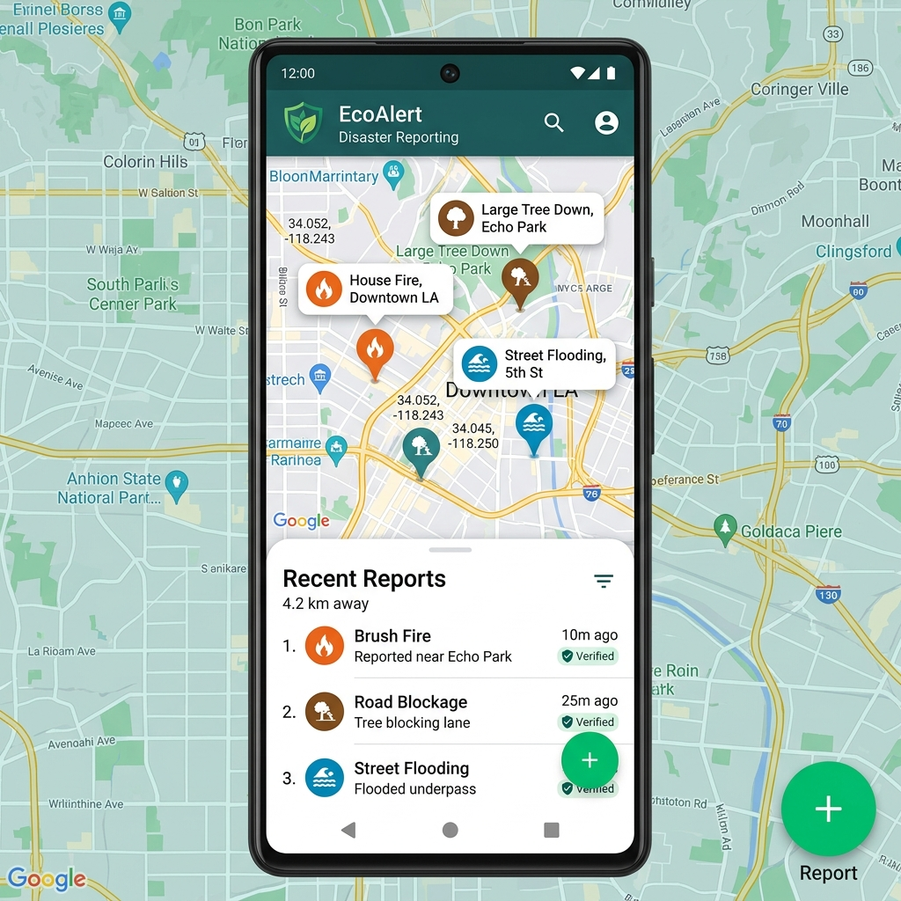

EcoAlert is a native Android application that allows users to report disasters and public emergencies. Users can submit incident reports with photos and location information to help authorities respond more efficiently.

EcoAlert is an Android application developed to make it easier for users to report disasters and public safety incidents. The application allows users to submit reports such as fires, floods, fallen trees, and infrastructure damage, along with photos and GPS location data.
The application also displays reported incidents on a map, making it easier to view nearby reports and monitor ongoing situations.
One of the main challenges in this project was handling location services and runtime permissions while providing a smooth user experience. I also worked on integrating maps and organizing the application using the MVVM architecture to keep the code easier to maintain.
This project helped me improve my Android development skills using Kotlin. I gained experience working with GPS, maps, application architecture, and building mobile applications that handle user-generated data.